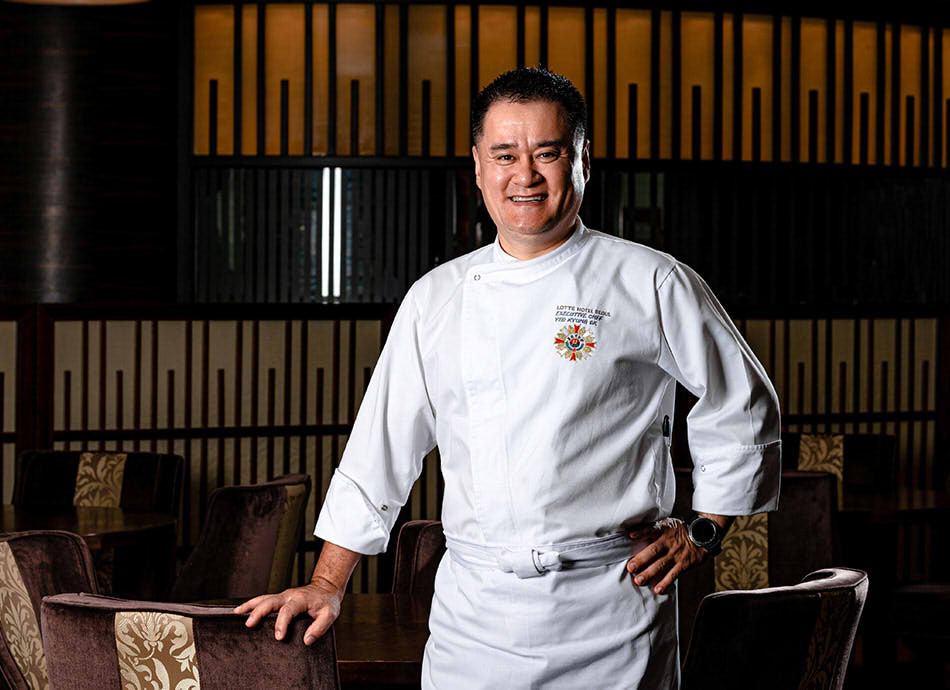

식탁 위에 펼쳐진 화려하고 강인한 대륙의 기상
롯데 호텔의 중식 부문을 총괄하는 여경옥 상무는 광둥요리의 대가이자
동시에 사천요리, 북경, 상해 요리까지 모두 섭렵한 대한민국 중식계의 최고 스타 셰프입니다.
중국 요리에 대한 깊은 이해와 한국인의 입맛에 대한 고찰을 바탕으로 중식 특유의 기름기는 물론 강한 짠맛과 단맛을 줄인 음식들은
푸드 저널리스트들로부터 한국인의 입맛을 가장 잘 이해한다는 평을 받고 있습니다.
중국 4대진미의 정통성과 함께 창의력도 가미된 최상의 맛.
눈과 입을 즐겁게 해줄 팔진진미의 음식들의 향연에 어우러져보세요.